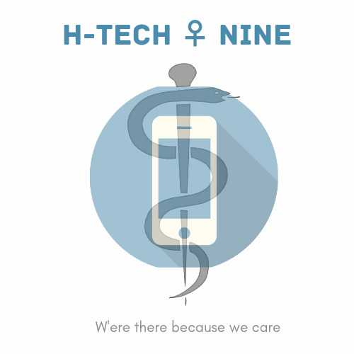
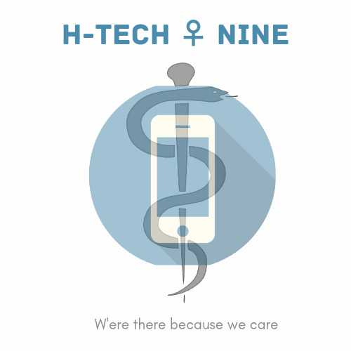

• « je ne suis pas comme les autes »
• « la honte d’être diabétique »
• « est ce qu’il peut jouer comme les enfants ? »
Le regard de l’autre est, tout d’abord, sur un plan psychologique, fondateur de notre sentiment d’existence
Les réponses :
• Un travail de restauration de l’image de soi peut alors s’envisager. Ce travail s’effectue non seulement dans la relation de soi à soi, mais se fait aussi par et avec les autres.
• Surmonter la honte, c’est accepter de s’exposer au regard de l’autre.
• Le lien avec l’entourage, familial, mais aussi médical, compréhensif et bienveillant, dans lequel se construit l’estime de soi, est ainsi essentiel pour que l’enfant ou l’adolescent, qui ressent de la honte d’être ce qu’il est, puisse se reconstruire une bonne image de lui-même et puisse retrouver confiance.
• Pour un adolescent qui a un diabète, être à même de réaliser ses soins devant les autres est, par exemple, un excellent signe qu’il a pu et su surmonter un tel sentiment.
• Le regard de l’autre peut alors aboutir au sentiment de fierté d’être ce que l’on est et donner confiance en l’avenir même si l’on passe par des moments difficiles et peut alors être un véritable soutien dans le chemin d’appropriation d’une nouvelle vie avec une maladie chronique
• Facteurs de l’enseignement : les connaissances et les compétences que l’enfant reçoit à propos de la maladie sont conséquentes et demandent une participation active de l’enfant pour obtenir des bénéfices
• La mise en œuvre de la planification de l’éducation thérapeutique par les enseignants ou les parents (sélection des méthodes et techniques, telles que des séances de groupe (avec les autres enfants diabétique), des jeux, des ateliers en variant les outils utilisés : images, vidéos, bandes audio, pour offrir une diversité des séances et favoriser la motivation ainsi que l’apprentissage
MrCarbs
 Ce site est dèveloppé par l'entreprise "H-Tech nine"
Contactez nous sur notre mail:@gbm3infomed2022@mail.com
ou numéro de téléphone:+21642424324
 H-Tech nine
H-Tech nine
MrCarbs
 Ce site est dèveloppé par l'entreprise "H-Tech nine"Contactez nous sur notre mail:@gbm3infomed2022@mail.com
ou numéro de téléphone:+21642424324
H-Tech nine